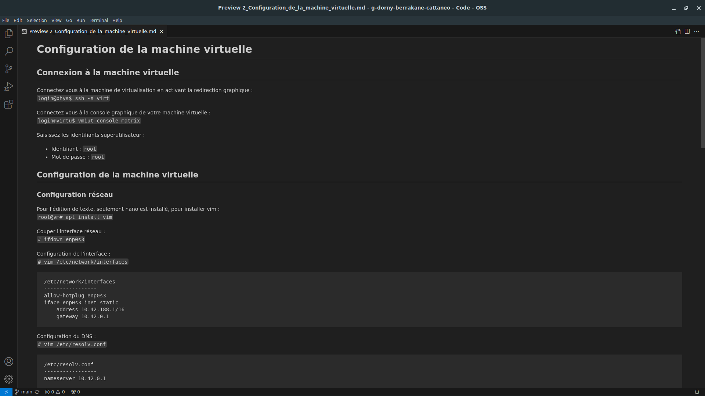
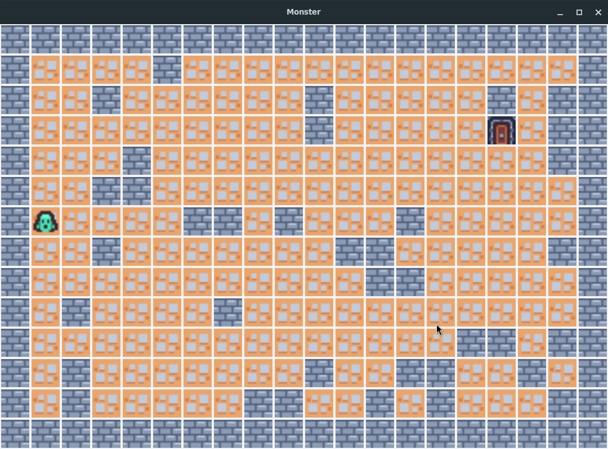
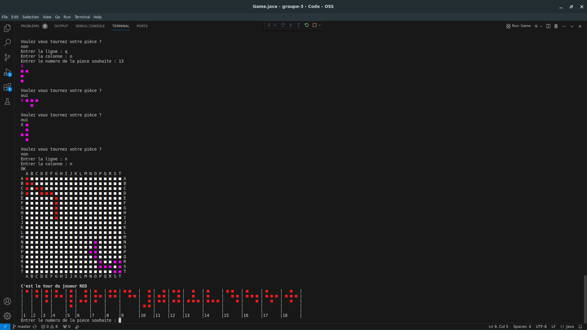
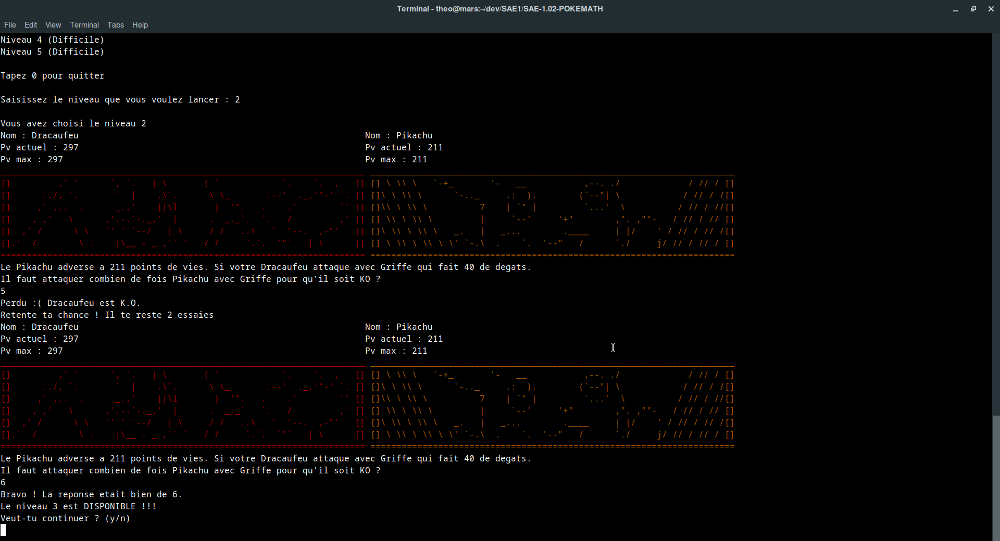
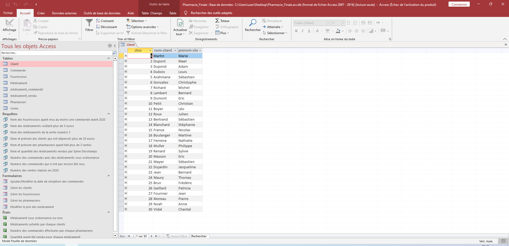
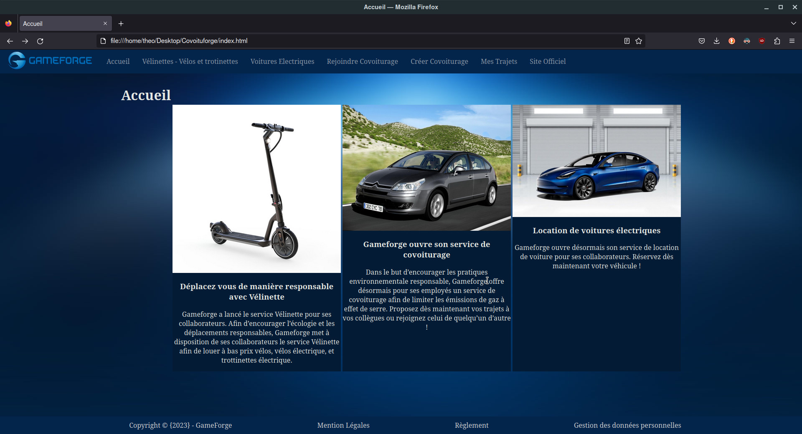
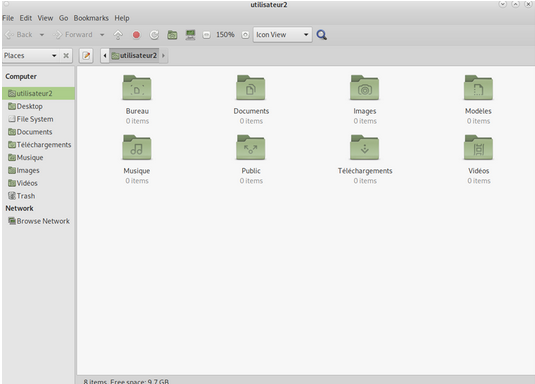
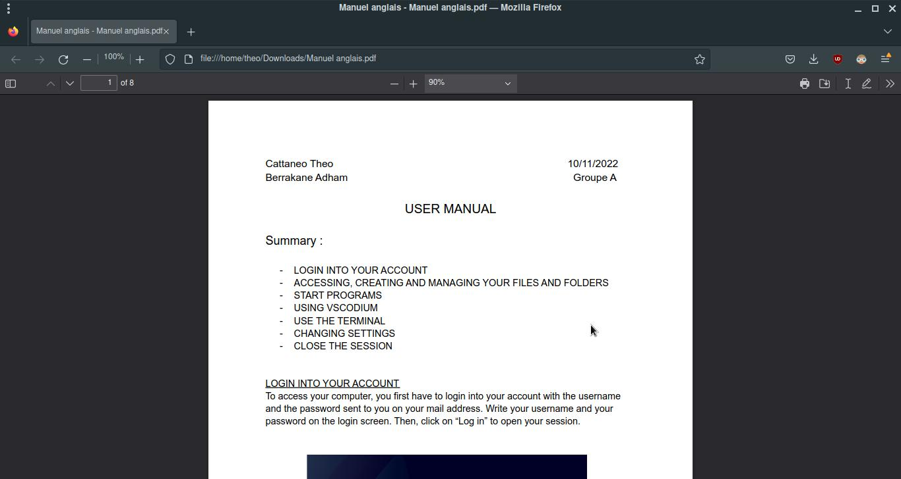

Théo Cattaneo
Bonjour, je m’appelle Théo Cattaneo, étudiant en 2ème année de BUT Informatique à l’IUT A de l’université de Lille, je suis passionné par la mise en place de systèmes informatiques. Je recherche un stage en administration système et réseau. J’ai eu l’opportunité de mieux découvrir ces domaines lors de projets d’études tel que la mise en place d’un serveur Synapse dans une machine virtuelle hébergée sur un serveur distant, ainsi que la réalisation de procédures en markdown.
Formation
-

BUT Informatique
Université de Lille
2022 - 2025
-

Baccalauréat Scientifique
Lycée Jean Rostand
2017 - 2020
Compétences
- Commandes UNIX
- Connaissances réseau
- Linux
- Python
- Bash
- Java
- HTML5 / CSS3
- Language C
- SQL
- Git
Système :
Programation :
Autre :
Projets
Mise en place d'un serveur matrix et réalisation de procédures
J'ai mis en place un serveur Matrix dans une machine virtuelle sur un serveur distant. J'ai également créé les procédures pour réaliser celles-ci en markdown
Développement du jeu "Chasse au Monstre"
Nous avons développé un jeu graphique en java dans lequel un Monstre et un Chasseur s'affronte dans le labyrinte, le monstre doit s'enfuire avant de se faire tirer dessus par le chasseur.
Mise en place d'un réseau virtuel
En partant de machines virtuelles préparées par mes enseignants, j’ai mis en place les configurations IP de ces machines.

Développement d'un jeu (méthode Scrum)
Dans une équipe de 5 personnes nous avons développé un jeu en Java inspiré du jeu de plateau “Blockus”.
Ventilation d'une base de donnée sur les Jeux olympiques
En partant d'un tableau contenant des donnés sur les participations aux JO depuis plus de 200 ans, j'ai écrit un script pour ventiler les données dans différente tables afin de supprimer les redondances et faciliter leurs exploitation.

Jeu ludo-éducatif en Java
Nous avons développé un jeu ludo-éducatif inspiré de la franchise Pokemon dans laquelle un élève de primaire pourra répondre à des questions de mathématiques dans ce thème.
Création d'une base de donnée sous access
Nous avons crée en une base de donnée sous Access. Nous avons réalisé cette base de donnée pour une pharmacie fictive depuis la conception de son Modèle Conceptuel de Données.
Création d'un site de mobilité
Nous avons crée un site web de mobilité fictif pour l'entreprise Gameforge. Celui-ci offre une interace pour que les employées de Gameforge puissent participer simplement à des covoiturages ou louer des véhicules respectueux de l'environnement.
Installation d'un système linux pour développeur
Après avoir fait une installation manuelle de Debian, j’ai écrit un script afin de réaliser cette tâche et configurer le système automatiquement.
Création d'un manuel pour un système utilisateur
Nous avons réalisés un manuel d'utilisation la machine que nous avons individuelement crées. Ce manuel en anglais explique au développeur comment utiliser et configurer sa machine.
